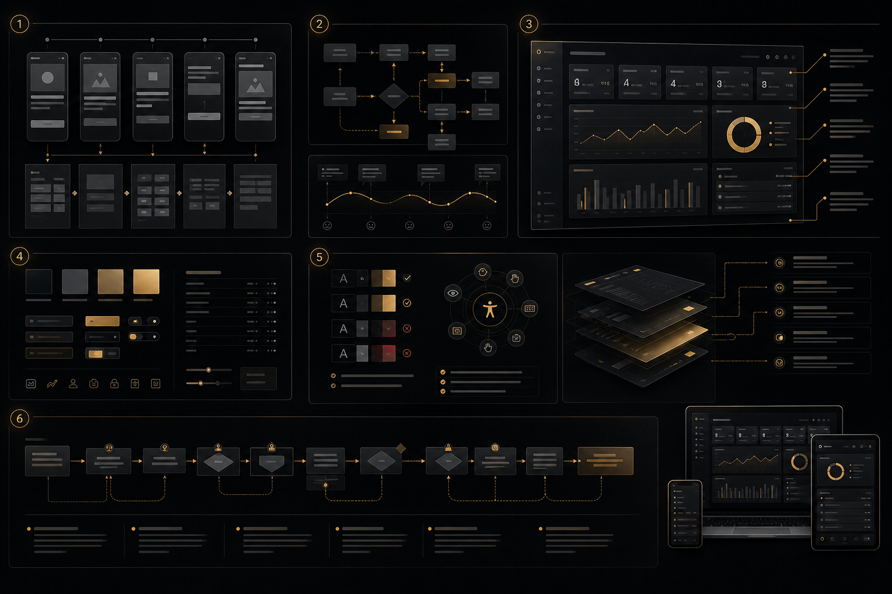

We design information architecture, interaction systems, and component specifications for data-intensive enterprise applications — with UX and engineering working in one team so designs are practical, implementable, and production-ready.

The principles of consumer product UX — simplicity, discoverability, minimal friction, prominent calls to action — are not wrong, but they are frequently misapplied in enterprise contexts in ways that produce worse outcomes for the users they are supposed to serve. Consumer UX is optimised for infrequent visitors completing a small number of simple tasks. Enterprise UX is optimised for expert users completing high-frequency, high-complexity tasks with consequences for getting them wrong.
An operations manager using a fleet management dashboard is not a first-time user exploring an unfamiliar interface — they are a professional who uses this application for 8 hours a day, five days a week, and needs to accomplish specific tasks as quickly as possible. The discoverability principles that make a consumer onboarding flow effective are actively counterproductive for this user: menus hidden behind hover states are a barrier to discovery on a marketing site but a keyboard shortcut is an accessibility improvement for an expert. Large touch targets and generous whitespace that reduce error rates for casual mobile users produce an information density that is frustratingly inadequate for a dashboard operator who needs to see 40 data points simultaneously.
The error cost calculation is also fundamentally different. When a consumer makes a mistake on an e-commerce site, the consequence is a frustrated customer and potentially a lost sale. When an operations manager makes an error in an admin panel — processing a refund for the wrong amount, applying a configuration change to all tenants instead of a specific one, approving an order that should have been rejected — the consequence is a direct operational or financial impact. Enterprise UX design treats error prevention as a core design objective, not as a secondary concern to be addressed in the error message copy.
These differences mean that an agency or designer whose portfolio consists entirely of consumer websites and mobile apps will consistently make suboptimal decisions when designing enterprise applications — not from incompetence, but from applying a practiced intuition that was developed in the wrong context. Enterprise UX is a specialisation, and the gap between a consumer UX practitioner applying their existing methods to an enterprise context and a specialist who has developed intuition and vocabulary specifically for enterprise interaction problems is consistently visible in the quality of the output.
Our enterprise UX practice is built around a single principle: every design decision must be traceable to a specific user task. Visual hierarchy, layout decisions, interaction patterns, component states — all of them exist to support documented user workflows, and when they cannot be justified against a specific task, they are removed.
We begin every enterprise UX engagement by understanding how work actually happens in the organisation — not how it is supposed to happen according to the product spec, but how users actually perform their tasks in the current system. This distinction matters enormously: enterprise users consistently develop workarounds that are invisible to product teams but reveal critical gaps in the current system's task support. A dispatcher who opens a spreadsheet alongside the fleet dashboard to track something the dashboard does not show is telling you precisely what the dashboard is missing. An analyst who copies data into Excel to perform calculations the analytics UI does not support is defining the next highest-value feature request.
Our research process includes structured contextual observation — watching users perform their actual tasks in their actual work environment, noting where they hesitate, where they make errors, and where they reach for workarounds. We supplement this with structured role-specific interviews that focus on decision processes: what information do you need to make this decision, where do you get it, what makes you uncertain, and what do you do when something goes wrong? The output is a documented task analysis per user role that becomes the reference document for all subsequent design decisions.
Information architecture in enterprise applications is governed by cognitive principles that have significant evidence bases in human factors research. Miller's Law — that working memory can hold approximately seven items simultaneously — informs our approach to navigation hierarchy and panel organisation. We avoid deep navigation trees that require users to carry navigation context in working memory; instead, we favour flat navigation with explicit context indicators. Hick's Law — that decision time increases logarithmically with the number of choices — informs our approach to action menus and toolbar design. When a toolbar contains 20 actions, the user's ability to locate and select the intended action is significantly impaired. We organise actions by frequency and relationship, surfacing the most common operations and grouping less common ones.
Information foraging theory — the observation that users navigate information environments using cost-benefit calculations about the value of following a particular path — informs our labelling strategy. Navigation labels must accurately predict the information that lies behind them so users can confidently select the correct path rather than backtracking from incorrect ones. Every label in our designs is evaluated for predictive accuracy: would a user who has not seen this application before correctly predict what they would find behind this label?
Expert users who spend hours daily in an application develop muscle memory for common interactions. Every unnecessary click, every modal dialog that requires mouse movement to dismiss, every tooltip that appears where keyboard input is expected is a friction cost that compounds across thousands of daily interactions per user. We design enterprise interactions as layered systems that serve both new and expert users simultaneously.
The primary interaction layer — the visible, labeled controls — serves users in their first weeks, when they are building familiarity and need affordances to be explicit. A secondary interaction layer of keyboard shortcuts provides accelerators for common actions once users have built familiarity. A command palette (accessible via Cmd+K or Ctrl+K) provides immediate access to any action in the application, searchable by name, for users whose primary cognitive model of the application is action-oriented rather than navigation-oriented. Contextual right-click menus surface the most relevant actions for any selected element, eliminating toolbar scanning for context-dependent operations. Configurable layouts allow power users to arrange the interface to match their specific workflow rather than accepting a one-size-fits-all layout. These layers coexist in the same interface — no feature is removed when more powerful alternatives are available.
A design system for an enterprise Angular application is not complete until it includes the implementation specifications that developers need to build it correctly. Figma designs without explicit state documentation, spacing token specifications, and animation timing are designs that get reinterpreted differently by each developer who implements them, producing visual inconsistency that accumulates into a degraded product over time.
We produce Angular-native design system specifications: component documentation that describes not just the visual states but the interaction states (default, hover, focus-visible, active, disabled, error, loading), the expected keyboard behaviour (Tab stops, Enter/Space for activation, Escape for dismissal), and the ARIA role and attribute requirements. Spacing is specified in rem values derived from a documented 4px base grid, enabling consistent spacing throughout the application without designer-developer translation friction. Design tokens are named semantically (not just by visual property) so that global theme changes can be applied by updating token values rather than hunting for specific pixel values throughout the codebase. Every component's Storybook story coverage is documented in the component specification.
WCAG 2.2 AA compliance is our design baseline, applied from the first wireframe rather than assessed after implementation. The practical difference between accessibility built in and accessibility bolted on is substantial in cost, quality, and the confidence of the engineering team producing it. When accessibility is a checklist applied at the end of a project, it produces retrofitted ARIA attributes on non-semantic HTML, colour contrast fixes that break the visual design, and keyboard navigation additions that work technically but feel like afterthoughts to users who depend on them.
When accessibility is a design constraint from the beginning, focus management for modal dialogs is designed correctly, keyboard navigation flows logically through the information hierarchy, status announcements are built into the interaction design rather than appended to implemented components, and contrast ratios are verified in the design tool before a single line of code is written. For enterprise customers in regulated industries, government procurement, or any context where software accessibility is a legal or contractual requirement, we produce VPAT (Voluntary Product Accessibility Template) documentation as a project deliverable. We test with NVDA on Windows and VoiceOver on macOS as part of our quality process, not as an optional add-on.
Is your enterprise application producing user errors or slow adoption? We'll review your current UX and identify the highest-impact improvements.
Request UX ReviewRelated Services
Task analysis-driven IA design with navigation hierarchy, labelling strategy, and content grouping based on documented user workflows per role — not on assumed information relationships.
Angular-native component specifications with complete state documentation, design tokens, spacing system, and Storybook integration — not just Figma frames.
Layered interaction systems: visible labeled controls for new users, keyboard shortcuts and command palette for experts, configurable layouts for personalised workflows.
WCAG 2.2 AA designed-in from wireframe, focus management, keyboard navigation flows, ARIA specifications, and VPAT documentation for enterprise procurement requirements.
Task-based usability testing with representative users per role, think-aloud protocol, quantitative task completion and error rate measurement, and validated design iterations.
Confirmation flows with scope communication, undo/redo systems for reversible operations, validation patterns that surface errors at input time rather than submission time.
The core differences are user expertise, task frequency, information density, and error consequences. Consumer UX assumes infrequent visitors who need maximum discoverability and minimal cognitive load. Enterprise UX assumes expert users who perform the same tasks daily, who optimise for speed over discovery after their initial onboarding period, who need to see high information density to make informed decisions, and who face real operational consequences for errors. This means enterprise UX applies different principles: information density is a feature rather than a problem, keyboard efficiency matters more than visual polish, error prevention is more important than error recovery, and consistency and predictability matter more than novelty. A consumer UX designer applying their intuition to an enterprise context will consistently optimise for the wrong things — not from incompetence, but because they are solving a different problem.
We produce both, and we treat them as complementary rather than alternative outputs. Figma designs communicate the visual intent: layout, spacing, colour, typography, and the overall visual hierarchy. Angular component specifications communicate the engineering requirements: the complete state matrix for each component, keyboard behaviour, ARIA attributes, animation timing, and design token mappings. Neither is sufficient without the other — Figma alone leaves engineering decisions to individual developers, which produces inconsistency; component specs alone without visual design produce technically correct but visually incoherent implementations. We deliver both, annotated and cross-referenced, so the engineering team has the complete information they need to implement the design correctly without ambiguity.
Validation happens at multiple stages and at appropriate fidelity for each stage. Information architecture decisions are validated with card sorting and tree testing before any visual design work begins — these are low-cost research methods that provide high-confidence data about whether users can find what they need using the proposed navigation structure. Interaction design decisions are validated with prototype testing using Figma interactive prototypes: we observe representative users attempting specific tasks, measure task completion rates and error rates, and identify specific interaction points where users hesitate or make incorrect choices. Component-level decisions are validated with Storybook reviews with engineering stakeholders, ensuring that the visual and interaction specifications are practically implementable before detailed design work is committed. This staged validation process significantly reduces the cost of design changes compared to discovering problems during or after implementation.
Yes, and this is often the more appropriate engagement. Full redesigns are disruptive for users, expensive for engineering teams, and carry significant risk — a redesigned application that loses the muscle memory of trained expert users can produce a temporary performance dip that is poorly received regardless of the long-term improvement. Targeted UX improvements, applied to the highest-pain workflows first, deliver visible improvement with manageable implementation cost and no disruption to existing users' familiarity with the parts of the system that work well. We typically begin with a UX audit that identifies the highest-impact improvement opportunities, prioritised by task frequency and error rate, and then design improvements to specific workflows rather than proposing a wholesale replacement of the existing interface.
UX and engineering working in one team is the structural answer. When the person designing the interaction system is in daily communication with the person who will implement it in Angular, infeasible designs are identified and resolved in the design phase rather than the implementation phase. We understand Angular's component model, its change detection implications, the capabilities and constraints of PrimeNG and Kendo UI components, and the performance implications of different rendering approaches. Designs we produce are not aspirational visual concepts that engineering must approximate — they are specifications of achievable Angular implementations, authored with an understanding of how Angular component state, inputs, outputs, and lifecycle hooks will support them. Where a design decision would require a significantly complex implementation, we flag it with the engineering cost estimate and typically offer a simpler interaction design that achieves the same user outcome with lower implementation cost.
Describe your enterprise application and the UX problems you are trying to solve. We'll respond with a specific, actionable assessment.